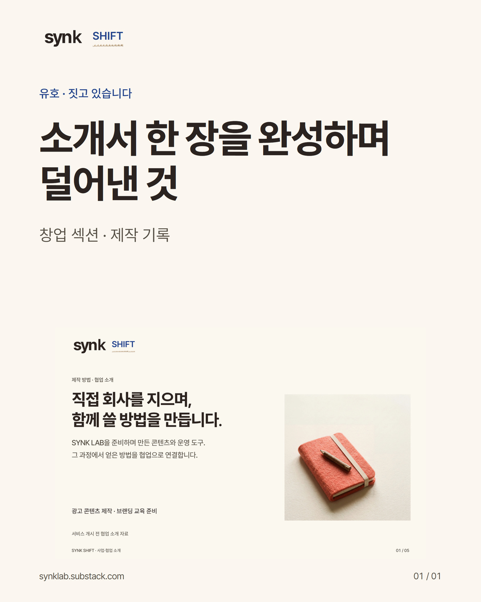

소개서 한 장을 완성하며 덜어낸 것
유호 · 짓고 있습니다 — 창업 섹션의 제작 기록
9월 9일, SYNK·LAB·SHIFT·PULSE 소개서 묶음을 완성했습니다. 네 브랜드를 소개하는 자료지만, 같은 설명을 이름과 색만 바꿔 반복하고 싶지는 않았습니다.
이번에 정한 한 가지는 읽는 순서였습니다. 큰 제목이 방향을 잡고, 핵심 설명이 의미를 잇고, 대표 실물이 확인할 대상을 보여주도록 구성했습니다.
좋아하는 자산에도 맡을 일이 있습니다
이미 갖춘 캐릭터와 소품이 많았습니다. 그래서 더 많이 넣을 수도 있었습니다. 하지만 모든 그림이 같은 일을 하는 것은 아니었습니다.
공책은 기록을 설명하는 자리에, 편지는 건네는 경험을 설명하는 자리에 놓았습니다. 캐릭터의 반복은 줄이고, 그 장면에서 함께 보고 반응하는 역할이 있을 때 남겼습니다.
캐릭터가 적으면 언제나 좋다는 뜻은 아닙니다. 그 그림이 무엇을 보태는지 먼저 묻기로 했다는 뜻입니다.
짧게 쓰기와 뜻을 덜기 사이
같은 뜻을 한국어와 몽골어로 거듭 설명하면 지면이 쉽게 빽빽해졌습니다. 뜻이 겹치는 설명을 덜고, 장마다 한 상황이 먼저 보이게 다듬었습니다.
그렇다고 독자가 판단하는 데 필요한 사실을 빼지는 않습니다. 무엇을 제공하는지, 지금 어디까지 준비했는지, 실제 시설 사진인지 연출 자산인지 같은 구별은 남겨야 합니다.
표현을 줄이는 목적은 침묵 자체가 아니라 읽는 사람이 길을 잃지 않게 하는 데 있습니다.
자기 자료에 써볼 다섯 칸
다음에 안내문이나 소개서를 만들 때, 화면을 열기 전에 이 다섯 줄을 적어 보세요.
1. 읽는 사람: ______
2. 쓰는 자리: ______
3. 먼저 남길 한 가지: ______
4. 판단에 필요한 사실: ______
5. 실제로 건넬 파일: ______
쓰는 자리가 휴대폰이라면 그 크기에서, 종이라면 출력한 크기에서 확인합니다. 글자가 잘리지 않는지뿐 아니라 무엇부터 읽어야 할지 보이는지도 살핍니다.
다섯 번째 칸도 중요합니다. 완성 이미지를 보는 일과, 그 파일을 받아 다음 업무를 이어가는 일은 다릅니다. 실제로 제공할 수 있는 원본과 자산, 바꿀 수 있는 범위, 다시 확인하는 방법을 함께 생각합니다. 제공하지 않는 권리나 지원을 기본 포함으로 적지는 않습니다.
이번에 확인한 것과 아직 모르는 것
이번 소개서는 지면·파일·배치를 검토한 제작 결과입니다. 학생의 학습 효과, 고객 문의 증가, 매출 변화가 확인된 사례는 아닙니다.
펠트 결의 이미지와 소품을 활용했지만 실제 손바느질 과정을 촬영한 기록도 아닙니다. 앞으로도 완성한 것과 준비하는 것, 직접 확인한 것과 기대하는 것을 나눠 쓰려고 합니다.
좋은 소개서는 모든 말을 먼저 끝내는 자료가 아니라, 상대가 자기에게 필요한 질문을 할 수 있게 돕는 자료라고 생각합니다.
여러분의 다음 소개서에는 무엇을 더 넣기보다, 어떤 반복을 먼저 덜어낼 수 있을까요?